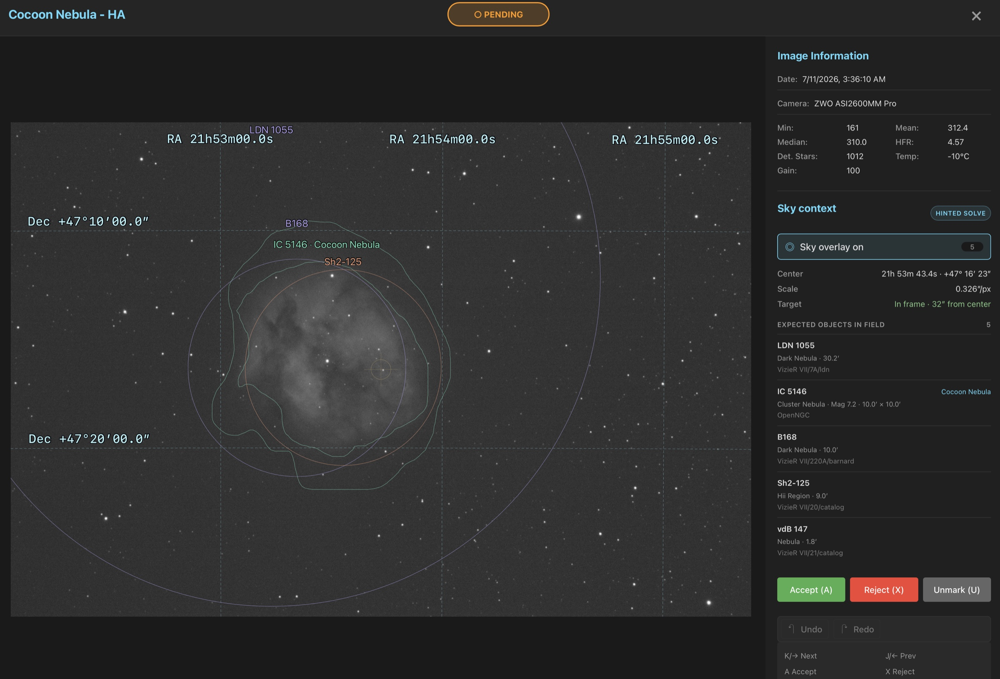
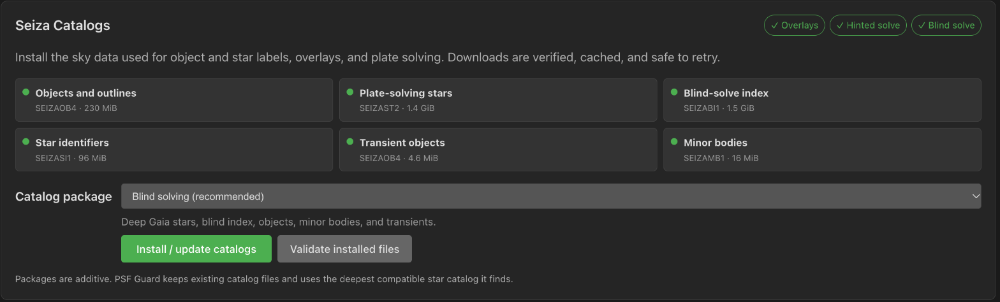

Sky Context & Plate Solving
PSF Guard lists the objects expected around a frame, solves its pixels on demand with Seiza, and draws catalog labels, outlines, an RA/Dec grid and the target offset over the image. This page covers the catalogs, where PSF Guard finds them, and solving a frame.

Context, solution and overlay
| Layer | What it shows | What it needs |
|---|---|---|
| Catalog context | Objects expected near the header or catalog target coordinates. Pointing context, not proof that an object is in the pixels. | objects.bin and rough target coordinates. |
| WCS solution | The frame's measured center, scale, rotation, parity and target offset. A supported embedded TAN WCS is taken at once; otherwise PSF Guard solves the pixels. | A star catalog, or a supported embedded WCS. |
| Sky overlay | An RA/Dec grid, target marker, labels, extents and catalog outlines drawn over the image. | A WCS solution, plus objects.bin for objects. |
1. Install the Seiza catalogs
PSF Guard embeds Seiza 0.24.0's solver but not its multi-gigabyte catalogs. Install them from Settings → Catalogs in the desktop app, or in a browser when the server runs with --allow-database-management. The Seiza Catalogs card shows which features are ready, keeps download progress across reloads, and checks files with Validate installed files.
Choose a Catalog package and click Install / update catalogs. Packages add to each other, and PSF Guard uses the deepest star catalog it finds.
| Package | Contents |
|---|---|
| Blind solving (recommended) | Deep Gaia stars, blind index, objects, minor bodies and transients. |
| Compact hinted solving | Tycho-2 stars and overlays, for rigs with reliable coordinates. |
| Dense hinted solving | A denser Gaia catalog for narrow or crowded fields. No blind index. |
| Deepest blind solving | G≤20 Gaia data plus the blind index. About 9 GB more. |
Quality scans measure SNR only against a Gaia catalog. Tycho-2 mixes two bands and is not used for it.

For a manual or headless install, get the seiza CLI from the Seiza releases or with Cargo, then download a bundle:
cargo install seiza-cli --version 0.24.0
# Recommended: choose a bundle and install it in Seiza's platform folder.
seiza setup
# Or download the complete, SHA-256-verified bundle to a folder you choose.
seiza download-data prebuilt --output /path/to/seiza-dataThe complete bundle holds every file. If you install files one by one, each has its own role:
| File | Role |
|---|---|
objects.bin | Coordinate-only object context, solved labels and catalog outlines. |
stars-lite-tycho2.bin, stars-gaia.bin or stars-deep-gaia17.bin | Hinted solving. Seiza picks the deepest one installed. |
blind-gaia16.idx | Blind fallback when the pointing hint is missing or stale. |
2. Point PSF Guard at the catalogs
seiza setup writes to the platform catalog folder, which PSF Guard searches on its own. Restart PSF Guard after installing or moving catalogs.
For another folder, set SEIZA_CATALOG_DIR before starting PSF Guard, or add astrometry.data_dir to the registry file:
"astrometry": {
"data_dir": "/path/to/seiza-data"
}Keep the existing databases entries. The registry lives at:
| Platform | Registry path |
|---|---|
| Windows | %APPDATA%\psf-guard\config.json |
| macOS | ~/Library/Application Support/psf-guard/config.json |
| Linux | ~/.config/psf-guard/config.json |
Name a single resource that lives apart from the bundle inside astrometry: stars for the star catalog (or SEIZA_STAR_DATA), blind_index for the blind index (or SEIZA_BLIND_INDEX). Relative paths resolve below data_dir. See Configuration.
Blind solves use the index beside the star catalog, since a catalog and its index ship together and an index found elsewhere may belong to another catalog. A blind_index setting or SEIZA_BLIND_INDEX still chooses the index. With neither, and no index beside the stars, PSF Guard looks in data_dir and Seiza's default folders.
Run with Docker
Mount the catalog folder read-only and point Seiza at the mount:
docker run -d -p 3000:3000 \
-e SEIZA_CATALOG_DIR=/catalogs \
-v /path/to/seiza-data:/catalogs:ro \
-v psf-guard-data:/data \
-v /path/to/catalog.sqlite:/data/database.sqlite \
-v /path/to/images:/images:ro \
ghcr.io/theatrus/psf-guard:latestWithout the catalog mount, catalogs installed from Settings land in /data/seiza on the data volume and survive image updates.
3. Check the running configuration
The capabilities endpoint reports the paths PSF Guard resolved and the features they enable. The validate endpoint reads every configured catalog in full, which can take minutes with the deep Gaia catalog:
curl http://localhost:3000/api/astrometry/capabilities
curl -X POST http://localhost:3000/api/astrometry/catalogs/validateobjects.bin but no star catalog. Solving needs one of the stars-*.bin files; the blind index only adds a fallback when the hinted solve cannot place the field.
4. Solve and inspect a frame
- Open an image. The Sky context panel reads the headers and catalog context without solving.
- With a supported embedded WCS, the overlay is ready at once. Otherwise click Solve field or press O.
- PSF Guard tries a hinted solve from the header's mount coordinates and pixel scale, then the blind index if the hint is missing or stale.
- A solve you ask for turns the sky overlay on. After that, O toggles it while you zoom, pan or grade.
- Press T to predict satellite crossings and align them with trails in the pixels. See Satellite Tracks.
The overlay stays as you last left it, across frames and reloads. A frame that a quality scan solved on its own does not turn it on.
The panel's badge names the source: Embedded FITS WCS, Hinted solve or Blind solve. Below it:
- Center: the solved RA and Dec.
- Scale: arcseconds per pixel.
- Rotation: the direction of celestial north from image up, positive toward image right, with "mirrored" when the field is flipped left to right against the sky.
- Target: In frame or Outside frame, and how far from center.
A failed solve offers Retry plate solve. A read-only account can view cached solutions but cannot start a solve.
Cache and concurrency
Solutions are stored under <cache>/<db-slug>/astrometry/<image-id>.json and reused until the source file, the catalog files or the Seiza version change. Seiza 0.24.0 reads more FITS layouts, such as tile-compressed images and images kept in an extension, but frames from N.I.N.A. read as before, so cached solves stay valid.
Solve field runs one solve at a time per database, and requests for the same frame share the result. Quality scans solve several frames at once, up to the processor share; see Astrometry Quality.
API
# Header and catalog context, or a valid cached solution. Does not solve.
curl http://localhost:3000/api/db/my-db/images/123/astrometry
# Decode the pixels and solve the field now.
curl -X POST http://localhost:3000/api/db/my-db/images/123/astrometry